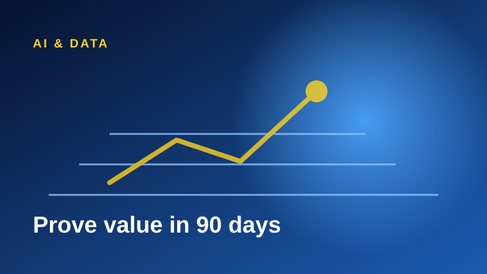
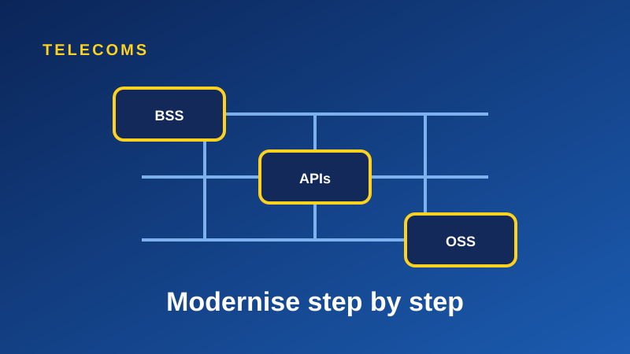

AI & Data
Why AI pilots stall, and how to prove value in 90 days
Most AI pilots fail on scope, not technology. Here is a practical way to prove value fast.
We combine global digital platforms, AI and data capability, telecom ecosystem relevance and African execution to help enterprises grow revenue, improve customer experience, automate operations and operate critical platforms.
Book an executive discovery session Explore solutionsThe best technology only pays off when someone can integrate it, run it and answer for it. GANTU connects world-class platform, cloud and AI partners with the telecom ecosystem, then delivers on the ground in Africa.
Practical transformation, explained in plain language.
Customer portals, mobile apps, CRM, self-service, omnichannel journeys, loyalty and digital roadmaps.
Business value. Better adoption, service quality, retention and speed to market.
AI assistants, generative AI, predictive analytics, document intelligence, knowledge management, IoT and computer vision.
Business value. Better productivity, visibility, decisions and operational control.
Wallets, payment orchestration, subscription platforms, marketplaces, billing, revenue management and reconciliation.
Business value. New revenue streams and stronger monetisation.
Cloud migration, APIs, application integration, data layers, security foundations and legacy transformation.
Business value. Less complexity, more resilience, scalable foundations.
Platform monitoring, service desk, SLA reporting, PMO, skills transfer and continuous optimisation.
Business value. Platforms that keep performing after go-live, with lower operating risk.
Use cases first, industry names second.
Helping operators modernise BSS/OSS, CRM, revenue platforms and digital service ecosystems.
Helping institutions and fintechs build secure digital finance, wallets, payments, KYC and fraud analytics.
Helping licensed operators improve player engagement, payments, compliance reporting and AI-driven decisions.
Helping institutions deliver citizen services, digital revenue collection, workflow automation and data dashboards.
Helping organisations use IoT, analytics and automation for asset intelligence, field operations and predictive maintenance.
Helping companies modernise operations, understand customers, automate workflows and create executive reporting discipline.
A clear path from first conversation to live operations.
Practical thinking for executives leading digital change.

Most AI pilots fail on scope, not technology. Here is a practical way to prove value fast.
Wallets and payments create new revenue only when billing, reconciliation and compliance work together.

Telecom platforms can be modernised step by step. Here is how to reduce risk while you do it.
Book an executive discovery session or request a capability discussion.
Book an executive discovery session